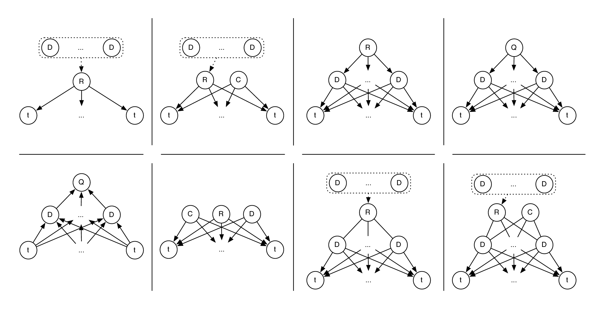

| Up | Next | Prev | PrevTail | Tail |

In Chapter 2 we have introduced various ways of defining and updating a query model, one of which is through the use of relevance feedback. Here, relevance assessments by the user are employed to improve the estimate of the query model, return more useful documents to the user, and, hence, improve end-to-end retrieval performance. As indicated in Chapter 2, relevance assessments can be explicit (in the case of judgments by a user), implicit (obtained from observing user behavior, e.g., in the form of click logs), or absent/assumed (where the top-ranked documents are used—a method known as blind or pseudo relevance feedback). In this chapter we focus on two of these types: explicit and pseudo relevance feedback.
Let’s consider an example to see what aspects play a role in transforming a query based on a set of feedback documents. Suppose we have such a set of documents. They may vary in length and, furthermore, they need not be completely on topic because they may discuss more topics than the ones that are relevant to the query. While the user’s judgments are at the document level, not all of the documents’ sections can be assumed to be equally relevant. Some relevance feedback models attempt to capture the topical structure of individual feedback documents (“For each feedback document, what is important about it?”). Other feedback models consider the set of all feedback documents (“Which topics are shared by the entire set of feedback documents?”). So, some consider each document as an independent piece of evidence, whereas others consider the set as a whole. In the cases where each document is considered independently, different intuitions exist with respect to how the importance of each should be captured, as described in Chapter 2, Section 2.3.2. To recap, models that solely look at the set of feedback documents are maximum-likelihood expansion and model-based feedback. The relevance modeling approach only looks at individual feedback documents and is, as such, an example of the first kind.
In this chapter we present two novel relevance feedback models based on language modeling that use information both from the set as well as from each individual feedback document to estimate the importance of a single feedback document. Thus, the models we introduce both use the topical relevance of a document and the general topic of the set of relevant documents to transform the original query. The first model (MLgen) compares each feedback document to the set of feedback documents and estimates its importance as the probability that the set of feedback documents generated the current one. The second model (NLLR) uses the log-likelihood ratio between each feedback document and the set thereof, normalized using the collection, to determine this estimate. Our primary aim in this chapter is to present and evaluate these models.
Our secondary aim is to compare various popular and well-known relevance feedback models for query modeling under the same experimental conditions. We include maximum likelihood expansion (MLE), model-based feedback (MBF), relevance models (RM-0, RM-1, RM-2), parsimonious relevance models (PRM), and our two novel models. All of these are listed in Table 4.1 and depicted graphically in Figure 4.1. As can be seen from this table, most of these models were introduced in Chapter 2; the remaining models, MLgen and NLLR, are described below. While many relevance feedback models have been studied in isolation, there has been very limited work on a thorough and systematic comparison using the same experimental framework. We continue to lack a proper understanding of the relative strengths and weaknesses of core relevance feedback models proposed in the literature and our goal is to evaluate and compare these to each other and to our two novel models. To our knowledge, this is the first large-scale study that has examined the performance of core relevance feedback models for language modeling using consistent settings across different test collections. Most earlier studies use different document collections, topic sets, and indexing and retrieval settings which prohibit an exhaustive comparative evaluation [182, 354], whilst others include small, unrealistic test collections [197].
| QL | Query Likelihood | Eq. 2.9 |
| MLE | Maximum Likelihood Expansion | Eq. 2.12 |
| MBF | Model-based Feedback | Eq. 2.16 |
| RM-0 | Relevance Model 0 | Eq. 2.20 |
| RM-1 | Relevance Model 1 | Eq. 2.24 |
| RM-2 | Relevance Model 2 | Eq. 2.23 |
| PRM | Parsimonious Relevance Models | Eq. 2.27, Eq. 4.7 |
| MLgen | Generative Maximum Likelihood | Eq. 4.1 |
| NLLR | Normalized Log-likelihood Ratio | Eq. 4.4 |
We report on the effectiveness of the relevance feedback models under both pseudo relevance feedback as well as explicit relevance feedback and do so on a diverse set of test collections, including newswire documents (TREC Robust 2004), a crawl of the .gov domain (the .GOV2 document collection used in the TREC Terabyte and TREC Relevance Feedback tracks), and a realistically sized web collection (ClueWeb09, Category B; used in the TREC Web 2009 track). All of these test collections were introduced in Section 3.3. Associated with relevance feedback algorithms are parameter settings such as the number of documents to use, the number of terms, etc. as introduced in Section 3.4. We also perform a detailed analysis of the robustness of the models under these parameters.
To summarize, we aim at answering the following main research question in this chapter:
This general research question gives rise to the following subquestions.
Our contributions are as follows.
The remainder of this chapter is organized as follows. We introduce our novel feedback models in Section 4.1. In Section 4.2 we detail the experimental setup. In Section 4.3 we discuss the performance and robustness of the models under pseudo relevance feedback, whereas we consider explicit relevance feedback in Section 4.4. We end with a concluding section.
| Up | Next | Prev | PrevTail | Front |